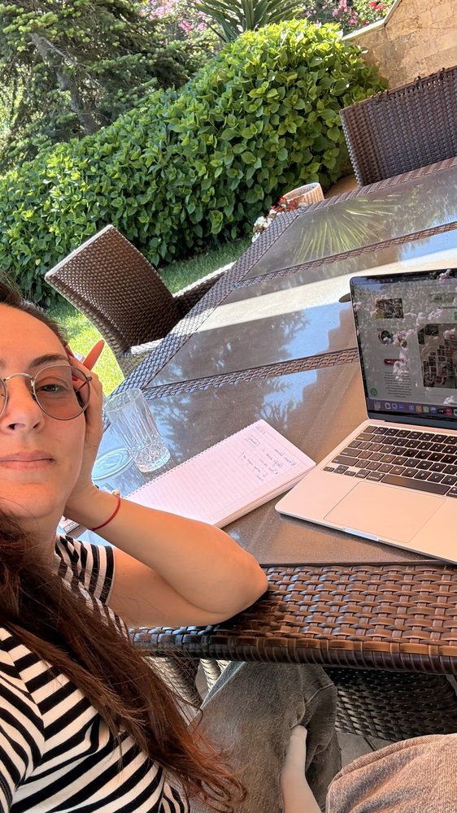
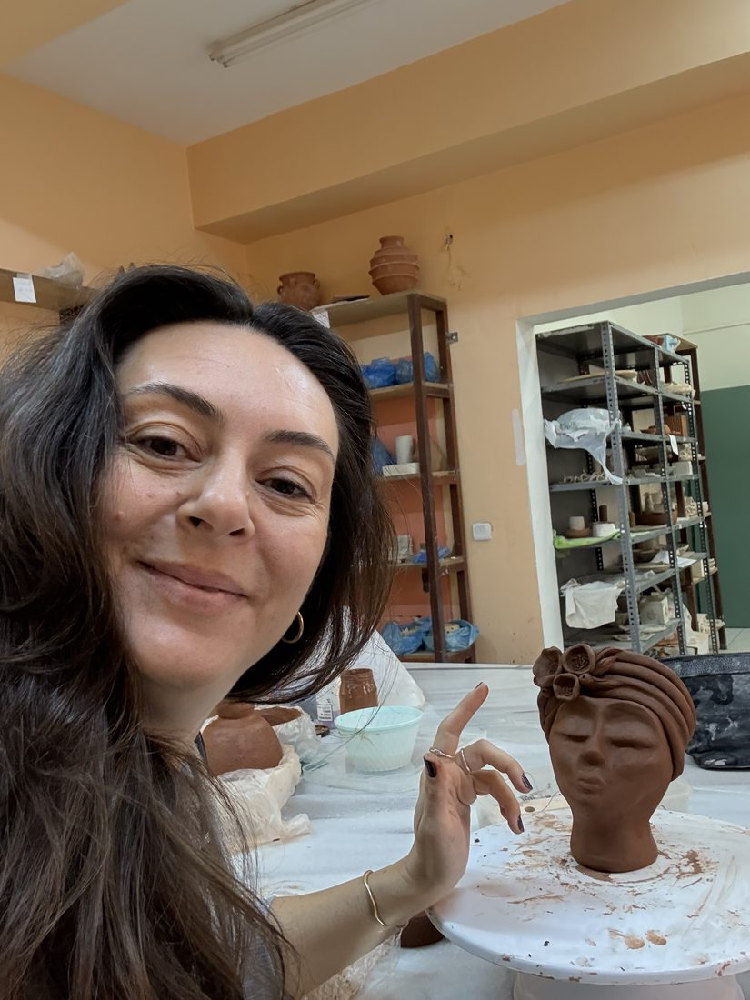
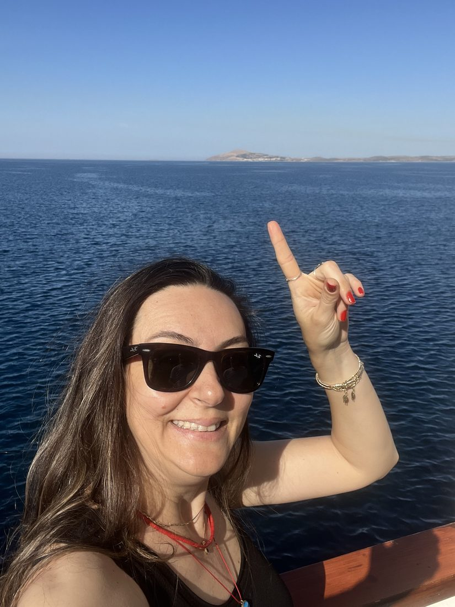

Hakkımda

Ben Memduha. Bütün sıfatlardan sıyrılmaya çalışsam bu yeterli olur sanırım.
Anne, evlat, eş, öğretmen, yazar, çizer… Hepsi beni tamamlayan bir parça. Pandeminin ardından sınıflardan ayrılan bir öğretmenim.
"Her kapanan kapı bir yenisini aralar" derler ya. Benim kapılarım da işte tam bu anda aralandı: yazmaya, seramiğe, çizmeye ve daha nicesine aralanan bir kapı.
Sanal Yazıevi ve Yeşim Cimcoz'la tanışmamın ardından birçok taş yerine oturdu. Şimdi ne istediğini daha iyi bilen, kendine şefkatle yaklaşan bir Memduha oldum.
Yazarak kendimi buldum, diyebilirim belki de.

Peki yazı ne zaman girdi hayatıma? Aslında hiç çıkmamıştı. Sadece zaman zaman susmuş, zaman zaman fısıldamıştı. Şimdilerde ise geveze bir çocuk gibi.
Yazmaya hâkim olduğumdan beri kendimi yazarak daha kolay ifade etmişimdir. Bu belki de ilk gençlik yıllarımın utangaç kızının bana bir hediyesiydi. Zamanla her şey kelimelere dökülür oldu. Ve sonra, ben bile inanamadım yazdıklarıma.
İşte böyle bir şey yazmak benim için: kendimi tanıma yolunda en iyi dostum.
"Neden yazıyorsun?" ya da "Yaz yaz, ne olacak?" diye soranlar olmadı mı? Bazen sesli, bazen bakışlarla çok duydum bu sözleri. Ama ben kimse için yazmıyorum, işin gerçeği.
Tüm bunların yanında bir başka dost da çamur oldu bana.
En yakın dostlarımdan biri "Sen seramik yapmalısın!" dediğinde çok da kulak asmamıştım. Ama kendisi sihirli öngörüleri olan biri olduğundan onu dinlemeden de edemedim. Ve yaklaşık yedi yıldır seramikle iç içeyim; sanırım asla vazgeçemeyeceğim.
Çamurun bana verdiği özgürlük elbette yazımı da çok etkiledi. Dikkat eksikliği olan herkes gibi, her şeyi en ince ayrıntısına kadar didiklemek zaten en iyi bildiğim şeydi. Ama şimdi etrafımdaki her bir imge bana başka kapılar açıyor. Yazı ve seramik, birbirini besleyen sonsuz bir kaynak oldu benim için.


Hangimiz bu soruyla karşılaşmıyoruz ki? Ben çok göbek İstanbulluyum; bu demek değildir ki ailemin birçok ferdi başka coğrafyalardan buraya göçmesin. Bir kısım Selanik'ten, bir kısım Kırım'dan, bir kısım Kafkaslar'dan, bir kısım Makedonya'dan toplaşıp gelmişler bu kadim şehre. Velhasıl, bir tutam ondan bir tutam bundan, bu toprağın kızıyım. Her gelen bir mahallesine yerleşmiş bu kentin: kimi Beşiktaş'a, kimi Beylerbeyi'ne, kimi Nişantaşı'na, kimi de Balat'a. Ben de her birinin bu kentteki adımlarının izini sürüyorum. Her bir sokak başka bir hikâye fısıldıyor kulaklarıma.
Doğduğun yer kadar, gönlünü verdiğin yer de senin memleketin olur. Bozcaada da öyle işte benim için. Adanın o buz gibi suyunda kırklandım desem yalan olmaz. Kendimi bildim bileli o şıra kokulu adanın sokaklarında, bağlarında, kumsallarında nefesime nefes kattım. En güzel dostlarımı ada verdi bana; en unutulmaz anılarımı.
Şimdi kim karşıma geçip "sen buralı değilsin" diyebilir ki bana?